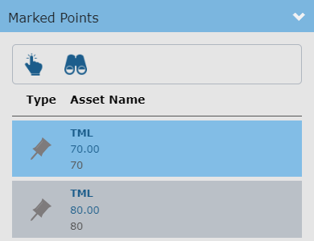
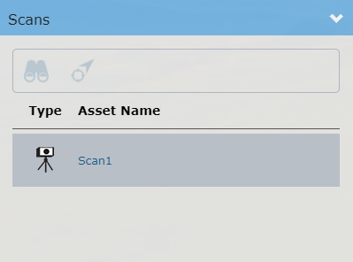

Content Browser
The Knowledge Book content browser lets you browse the asset content of a Knowledge View. The content browser will only present assets which are part of the Knowledge View.

The content browser can be displayed by clicking the "Content Browser" tab in the top left-hand corner of the Knowledge Book viewer. Click the "Content Browser" tab again to hide the content browser.
The content browser consists of 3 main panels:
Current Asset Location

Represents the current asset location in the content browser. The panel contains a hierarchy control which lets you change the asset location by clicking one of the parents of the current asset.
The Search Assets text box lets you search for assets by name in/under your current asset location. Enter a search string. This will populate a list of assets whose name contains the search string. The list also presents the asset location in the hierarchy. Click the desired asset in the list to select it in the asset content browser. You now can find the asset in the viewer via the asset toolbar. The Search Assets function currently does not support searching for Marked Points by name.

Asset Content

Lists the assets immediately under the current asset location.
In the asset list, click the |
to change the asset location and list the assets under the new asset location. |
To select an asset, click the asset name or icon. The asset toolbar commands will be enabled. Asset toolbar commands act on the selected asset.
The asset toolbar provides the following functions:
|
Pick the selected asset in the viewer. |
|
Zoom to the boundaries (extents) of the selected asset. |
|
Go back to the previously visited asset level in the asset hierarchy. |
|
Go forward to the next visited asset level in the asset hierarchy. This command is only available if you have previously used the back button. |


Marked Point Content

Lists all the marked points under the current asset location. The marked point card in the card view contains the marked point type, name, and caption.
To select a marked point, click the marked point. The marked point toolbar commands will be enabled. Marked point toolbar commands act on the selected marked point.
Marked Point Toolbar commands
The marked point toolbar provides the following commands:
|
Pick the selected marked point in the viewer. |
|
Zoom to the boundaries (extents) of the selected marked point. |
Scan Content

Lists all the scans which are in the extents of the assets in the Knowledge View.
Scans are not displayed in the viewer by default. The display of the scans can be toggled in the display manager. |
To select a scan, click on the scan. The scan toolbar commands will be enabled and the scan quick info will be shown. Scan toolbar commands act on the selected scan.
Scan Toolbar commands
The scan toolbar provides the following commands:
|
Zoom to the boundaries (extents) of the selected scan. |
|
Align the camera to the position and direction of the scan. |